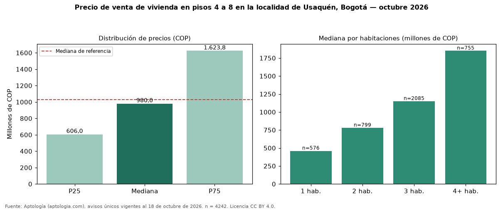

Precio de venta de vivienda en pisos 4 a 8 en la localidad de Usaquén, Bogotá — octubre 2026
Con 4242 avisos únicos, el precio mediano de vivienda en pisos 4 a 8 en venta en la localidad de Usaquén, Bogotá es COP 980 millones. Frente a toda la oferta de venta en la localidad de Usaquén, Bogotá (COP 1,03 mil millones), la diferencia es de 5 % por debajo. En todo Bogotá, la misma combinación tiene mediana COP 815 millones (+20 %). El rango intercuartílico va de COP 606 millones a COP 1,62 mil millones (razón 2,7). Por metro cuadrado, la mediana es COP 7.750.000/m² (+5 % frente a COP 7.391.304/m²), puesto 5 de 17 localidades comparables. Cruzando con la oferta de arriendo equivalente, la rentabilidad bruta implícita es 8,8 % anual. Por habitaciones: 1 habitación, COP 460 millones (n = 576); 2 habitaciones, COP 780 millones (n = 799); 3 habitaciones, COP 1,15 mil millones (n = 2085); 4 o más habitaciones, COP 1,85 mil millones (n = 755). Datos abiertos CC BY 4.0 de Aptología; fuente y búsqueda de inmuebles: https://www.aptologia.com/venta/bogota/usaquen. Archivos: PDF de 2 páginas, CSV con las cifras y gráfica PNG.

| Avisos únicos | 4242 |
|---|---|
| Percentil 25 | COP 606.000.000 |
| Mediana | COP 980.000.000 |
| Percentil 75 | COP 1.623.750.000 |
| Mediana por m² | COP 7.750.000 |
Fuente: avisos vigentes de portales inmobiliarios recopilados por Aptología, deduplicados (mínimo 30 avisos únicos por celda). Precios pedidos, no cerrados. Fecha: 2026-10-18.